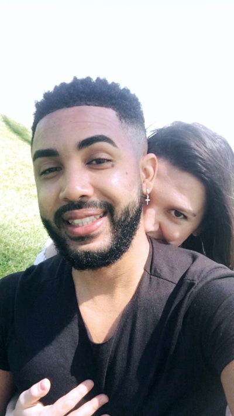

Marcos Sonhador 💭
Início
Olá, eu sou o Marcos .
Tenho 33 anos, sou casado com a Maria
uma mulher forte, inteligente e cheia de vida.
Estamos morando em Portugal.
Profissão
Atualmente trabalho em um "café", lá vendemos doughnuts,
croissant e bagel. Entretanto estou estudando programação.
Programação
Depois que perdi meu último emprego, fiquei bastante abalado
fiquei alguns dias em casa, mas logo depois começei a trabalhar em um café.
Um lugar maravilhoso. Começei a trabalhar por mais horas e ganharia uma folgo a mais,
Percebi que tinha uma folga a mais e continuava insatisfeito, isso estava me deixando
bastante angustiado, começei a enxergar que minha vida iria continuar igual caso eu
não tomesse alguma atitude a respeito "trabalharia muito e não iria aproveitar a vida".
Então resolvi estudar programação, vi que as oportunidades eram muitas e com uma carga horária
menor. Realmente a única viriável para conseguir ser um programador seria o tempo de aprendizado.
Sonho
